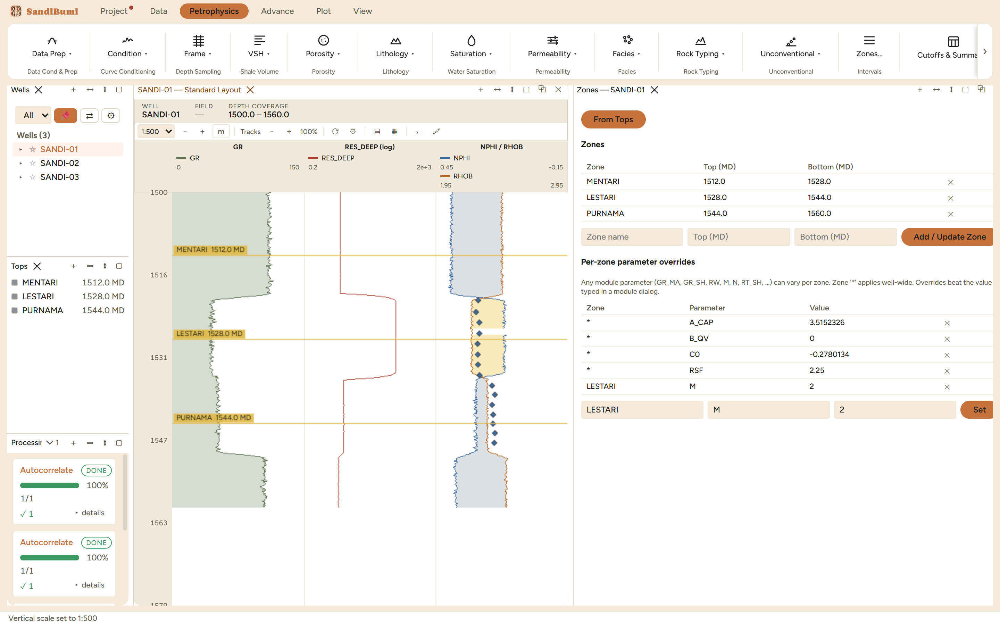

Zones turn tops into intervals, and intervals into the address a
parameter lives at. The Zones pane (Petrophysics ▸
Zones…) manages both halves: the zone table itself, and the
per-zone parameter overrides that let one well carry a different
cementation exponent above and below a boundary without touching any
module dialog. Reach for it right after tops land, and again whenever a
parameter should stop being one number for the whole well.
The pane

The example well after From Tops: three zones spanning
top-to-next-top, the accepted calibration constants sitting as
well-wide ('*') overrides, and one per-zone row (M on the middle
zone) added through the form below the table.
From Tops is one click per well. Each interval runs from a
top down to the next; the last runs to TD. On the example well that
made MENTARI 1512.0–1528.0, LESTARI 1528.0–1544.0 and
PURNAMA 1544.0–1560.0, and the same click on the other two wells
built their zones on their own autocorrelated tops – same names,
each well's own depths.
The override table is the precedence rule made visible. The
pane states it in one sentence:
Any module parameter (GR_MA, GR_SH, RW, M, N, RT_SH, …) can vary per zone. Zone '*'
applies well-wide. Overrides beat the value typed in a module dialog.
Calibrations land here too. The four well-wide rows in the
figure (A_CAP, B_QV, C0, RSF) were not typed in this pane – they
are what the resistivity-conductivity calibration wrote when its fit
was accepted, arriving as one batch. The Zones pane is where every
such acceptance becomes inspectable.
Step by step
Open Petrophysics ▸ Zones… with the well
selected, and press From Tops (or type a name and depths into
the Add / Update Zone row for an interval no top defines).
To scope a parameter, fill the bottom row – zone name (or
* for well-wide), parameter name, value – and press
Set. The write goes through the run-custody prompt like any
other change that reaches a deliverable: who set it, and on what
source.
Repeat per well, or manage many wells' values at once in the
per-well parameter grid (Petrophysics ▸ Batch).
Reading the result
The demonstration row sets M = 2 on the middle zone –
deliberately the same value the Archie dialog already defaults to, so the
mechanism is visible without smuggling in a physics claim. What matters is
the plumbing it proves: on the next saturation run, samples inside
LESTARI read their M from this table, samples outside it read the module
dialog, and the Processing History records the change as its own entry
("Set M = 2 on zone LESTARI") with the custody it was made under. A real
study puts a fitted or referenced value here, and cites it in the custody
prompt's source field.
QC and pitfalls
Removing an override is a deletion, not a zero. The ✕
on a row deletes it, and the run falls back to the module value. A
parameter row pinned to 0 would keep computing with zero – which
is why clearing a fitted parameter goes through the delete, never
through typing 0.
Zone names must match across wells to aggregate. The pay
summary and dashboard group by name; a well whose middle zone is
spelled differently reports as a different zone. Building all wells'
zones from autocorrelated tops keeps the names aligned by
construction.
The override wins silently, so audit the table before quoting a
run. A forgotten test row beats the carefully chosen value in the
module dialog – this pane is where to look when a zone's answer
refuses to change with the dialog.